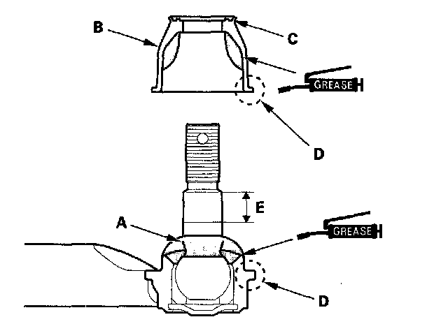
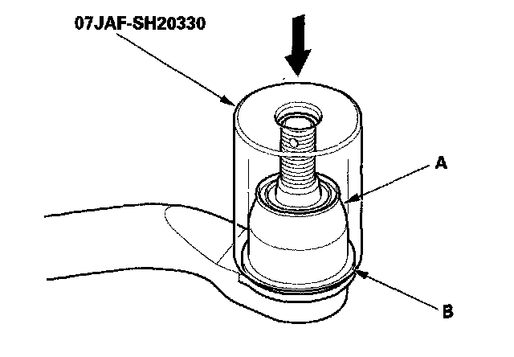

Tie Rod Boot: Service and Repair
Tie-rod Ball Joint Boot ReplacementSpecial Tools Required
Bushing Base 07JAF-SH20330
1. Remove the boot from the tie-rod end, and wipe the old grease off the ball pin.
2. Pack the lower area of the ball pin (A) with fresh multipurpose grease.

3. Pack the interior of the new boot (B) and lip (C) with fresh multipurpose grease.
^ Note these items when installing new grease:
^ Keep grease off the boot mounting area (D) and the tapered section (E) of the ball pin.
^ Do not allow dust, dirt, or other foreign materials to enter the boot.
4. Install the new boot (A) using the bushing base. The boot must not have a gap at the boot installation sections (B). After installing the boot, check the ball pin tapered section for grease contamination, and wipe it if necessary.
